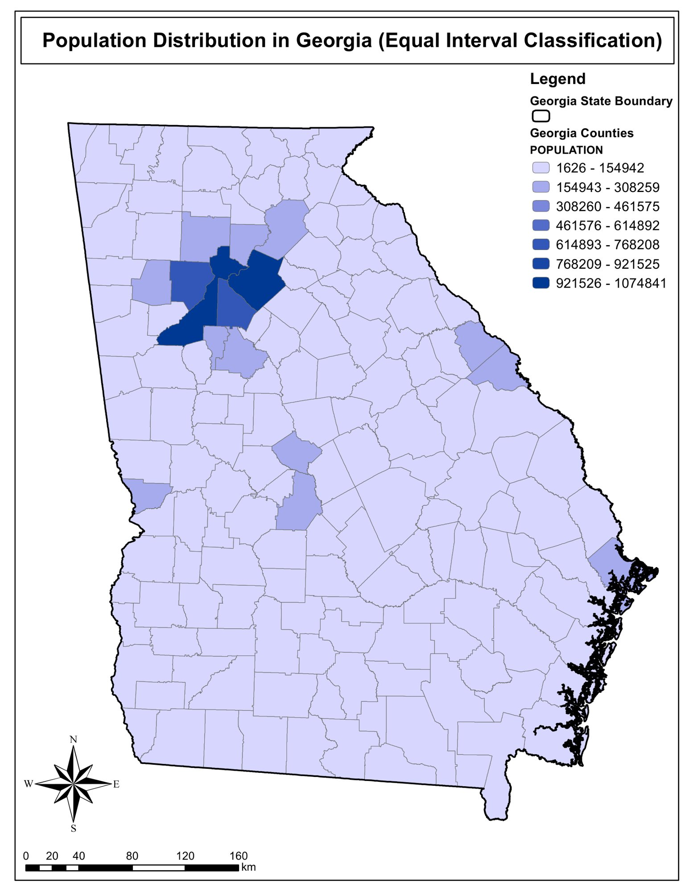
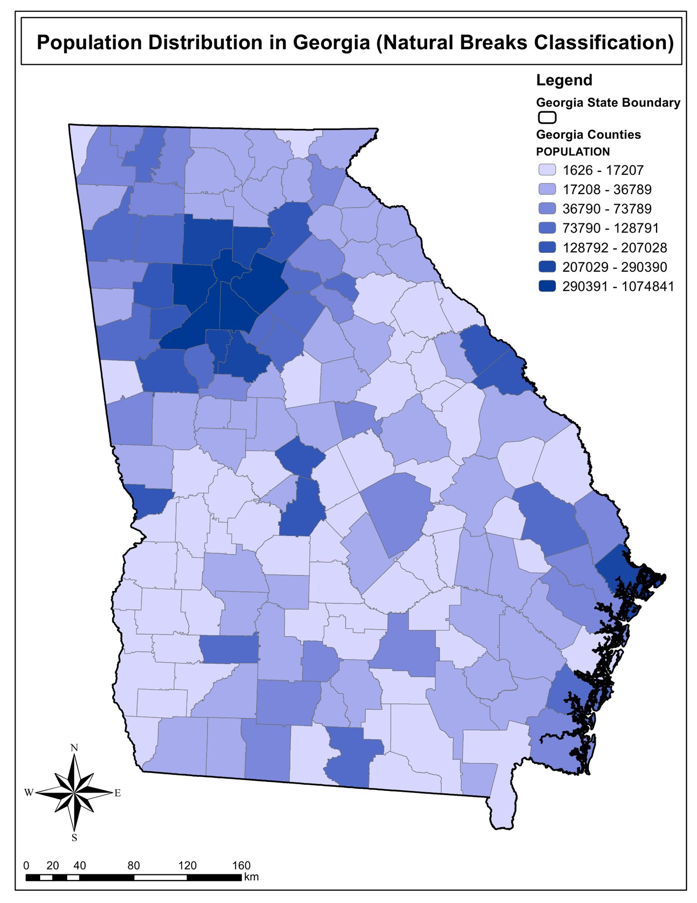
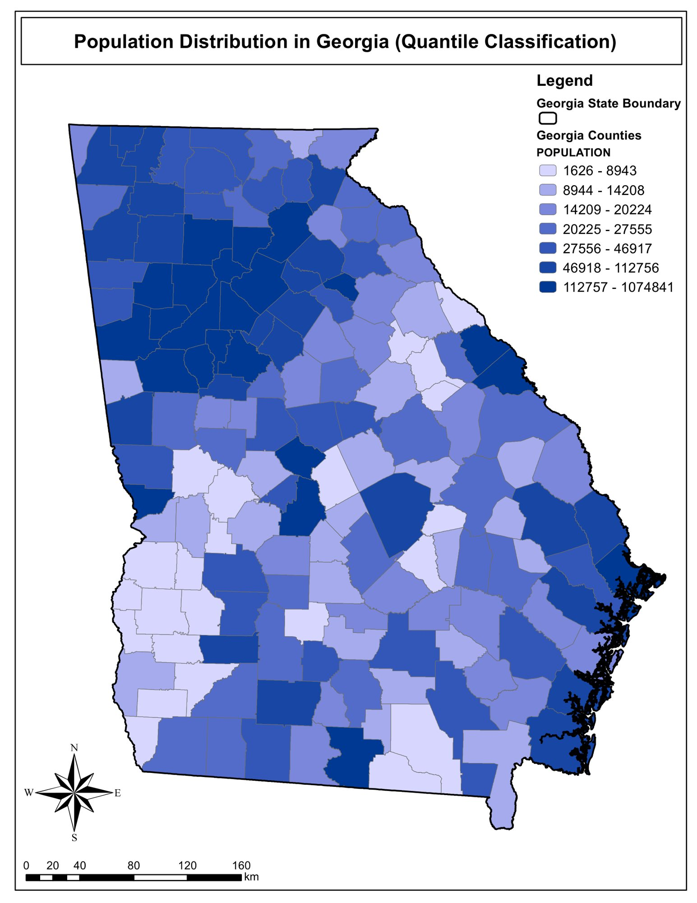

Cartography & Thematic MappingFig. 1 Equal Interval classification Fig. 2 Natural Breaks (Jenks) classification Fig. 3 Quantile classification 
Fig. 4 Standard Deviation classification
Choropleth Classification Comparison: Georgia
Mapped U.S. Census population for Georgia's 159 counties four ways (Equal Interval, Quantile, Natural Breaks, Standard Deviation) with matching layouts.
- Location
- Georgia, USA (159 counties)
- Year
- 2025
- Client
- Upwork client
- Tools
- ArcGIS 10.8, 2020 U.S. Census, TIGER/Line






Challenge
Show how the choice of classification method changes what a choropleth map says about the same data.
Approach
- Cleaned the attributes, removed nulls and projected to StatePlane Georgia West
- Mapped population with Equal Interval, Natural Breaks (Jenks), Quantile and Standard Deviation, using matching layouts
- Compared the advantages and drawbacks of each method in a one-page analysis
Results
- Equal Interval hides most variation: almost every county falls in the lowest class (1,626–154,942)
- Quantile forces equal groups and exaggerates differences among rural counties
- Natural Breaks (Jenks) gives the most meaningful picture, showing the Atlanta concentration while still separating rural counties
- Standard Deviation highlights the extreme metro counties but is hard for non-specialists to read